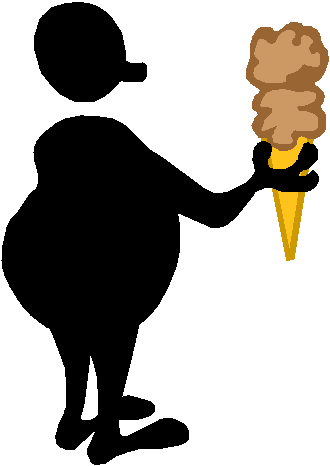

|
|
|
- free your
true Self to guide you |
|
 |
Study: Dieting Hardest
for
Emotional Eaters
Reuters, via
Yahoo News, 11-9-07
|

 The Web address of this article is
http://sfhelp.org/gwc/news/emotional_eaters.htm The Web address of this article is
http://sfhelp.org/gwc/news/emotional_eaters.htm
Updated
April 11, 2015
Clicking underlined links here will open a
new window. Other links will open an informational popup,
so please turn off your
browser's popup blocker or allow popups from this nonprofit Web site.
If your playback device doesn't support Javascript, the popups may not display.
Follow underlined links after
finishing this article to avoid getting lost.
This research supports the
Lesson-1 premise that
from inherited psychological
promotes xcessive weight and unhealthy
eating habits. These symptoms are increasing relentlessly among U.S. kids and adults. See
my comments after this reprint for more perspective. The
highlites below are mine. - Peter
Gerlach, MSW
+ + +
Emotional eaters -- people who eat when they are lonely
or blue -- tend to lose the least amount of weight and
have the hardest time keeping it off, U.S. researchers
said on Thursday.
They said the study may explain why so many people who
lose weight gain it all back.
"We found that the more people report eating in response
to thoughts and feelings, the less weight they lost,"
Heather Niemeier, an obesity researcher at The Miriam
Hospital and The Warren Alpert Medical School of Brown
University, said in a statement.
"Amongst
successful weight losers, those who report emotional
eating are more likely to regain," said Niemeier,
whose study appears in the journal
Obesity.
The study included 286 overweight men and women who were
participating in a behavioral weight loss program.
A second group consisted of more than 3,300 adults who
have lost at least 30 pounds and kept it off for at
least one year.
Niemeier and her team analyzed responses to an eating
inventory questionnaire.
They focused on people who ate because of external
influences, such as people who eat too much at parties,
and people who ate because of internal influences, such
as feeling lonely or as a reward.
What they found
is that
the more a person ate for internal reasons, the less
weight they lost over time.
"Our results suggest that we need to pay more attention
to eating triggered by emotions or thoughts as they
clearly play a significant role in weight loss,"
Niemeier said.
The study was funded by a grant from the National
Institutes of Health.
Copyright © 2007 Reuters Limited. All rights reserved.
 Comments
Comments
These NIH-study
findings support the premise that some people
unconsciously use
eating and food (e.g..sugar, fat, and
carbohydrates) to mute uncomfortable "emotions."
Implication: dieting doesn't work (keep excessive
weight off permanently) for such people because it
doesn't reduce their
The study's conclusion ("we need to pay more
attention to eating triggered by emotions or thoughts")
is too vague to have any practical meaning. At best,
these findings invite further research on questions
like these:
What factors promote significant inner pain?
What can people do to recognize, admit, and
permanently reduce inner pain without chemicals -
including food?
Why do typical overweight people neglect their
physical and psychological health despite "knowing
better"?
Will typical "emotional eaters"
- GWCs) want to consistently take better care of themselves if they know these findings? If not -
why?
How do these findings compare to research on "eating
disorders" like anorexia, bulimia, and
"comfort-food" addiction?
|
Premise
from
36 years' research:
I believe
compulsive overeating, obesity, and
unsuccessful dieting are epidemic
symptoms of the primary problem:
public apathy and denial of the lethal [wounds + unawareness]
that causes unwise child conceptions,
inadequate parenting, and unintended child
wounding.
For three powerful ways
you can
help to break this epidemic cycle, see
this. |
Also,see these similar recent research summaries:
Eating disorders are a guy
thing too, study finds
"Fat and Happy" - Why
Americans Don't Diet
"Mental illness" starts
by age 14
Americans are
neglecting their health,
and...
Overweight adults and
kids are increasing in the US
Notice what you're
now. Recall why you read this - did you get what you
needed? If so,
what do you need to do now? If not, what
you
need? Who's
these questions - your wise
resident
or
 Prior page
/ Lesson-1
study guide
/
Print page
Prior page
/ Lesson-1
study guide
/
Print page
site
intro / course outline /
site search /
definitions / chat
/ contact
/
|